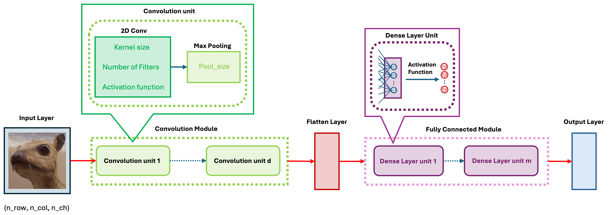

5. Convolutional Neural Networks
Convolutional Neural Network (CNN) architecture is a general term for a class of deep learning architectures. With the development of deep learning, CNNs have evolved from the early LeNet, which had only a few layers, to ResNet, which can exceed 100 layers in depth. Recently, Vision Transformer (ViT), based on the transformer architecture, and ConvNeXt, which integrates Transformer and CNN, have emerged as the latest architectures in this field. However, a skyscraper starts from the ground—all these architectures are fundamentally built on the use of convolution. So, what is the motivation for using convolution? What exactly is convolution? And what role does it play in deep learning? In this section, we will answer these questions.
5.1 Motivation:
In lecture 2, we used image data of only 16×16 pixels, which amounts to 256 pixels in total. In the lab for lecture 3, the MNIST dataset had slightly larger images, with dimensions of 28×28, totaling 784 pixels. For such input data, a single neuron alone would require 785 parameters. At that time, we used two dense layers with 256 and 128 neurons, respectively, resulting in a final neural network model with 235,146 parameters. Such a large model requires a vast amount of labeled data for training. Meanwhile, CIFAR-100, one of the benchmark datasets in deep learning, consists of 32×32 images with three color channels. If we were to build a model purely using dense layers, the number of parameters would be enormous, making training practically infeasible.
From another perspective, image features are usually local. This is easy to understand—when distinguishing between the digits 5 and 6, we primarily focus on whether the small loop at the bottom is closed, or whether the brushstroke in the top-left corner is straight or curved, rather than examining the entire image. However, dense layers inherently act as global feature extractors because they assign a weight to every variable (pixel) during computation. Therefore, applying dense layers directly to image data is not only unreasonable but also highly inefficient.
Based on these two considerations, researchers turned to using convolution for image data. So, what exactly is convolution?
5.2 What is Convolution?
If you search for “convolution” on Wikipedia, you will definitely see the formulas and GIF animations below. If you have a certain mathematical background, they may appear quite beautiful. But if you find them confusing, that’s okay—forget about them, and let’s start fresh.
\[ (f*g)t = \int_{-\infty}^{\infty} f(\tau)g(t-\tau)d\tau \]

The blue curve \(f(t)\) is the original input; The moving red window is called kernel; The black line is the results of convolution.
Do you happen to be familiar with the moving average method in statistics, particularly in time series analysis? Simply put, it is an important tool for curve smoothing. Let’s look at the example in the figure below. At the top, we have our input data, \(x_1, x_2, \dots, x_p\). Due to the influence of noise, it seems difficult to directly discern the underlying pattern in the data. (If you’ve already figured it out, please pretend you haven’t—for now.) The moving average involves using a fixed-size window to scan through the data. In each step, the window moves over a subset of the data, and the average value within that window is calculated. The resulting average value will be considered as the output value at the center point of the window’s current position.

The following animation demonstrates the effect of the moving average. In fact, the moving average is essentially a 1-dimensional convolution. By performing a convolution operation (moving average) on the time series, the hidden information within the data can be easily extracted.
Animation-Demo of 1-dim convolution (Moving average)
Before introducing 2D convolution, let’s first define an important terminology. In the previous example, \(x_1, x_2, \dots, x_p\) is the input to the convolution, \((1/10, \dots, 1/10)\) is referred to as the kernel (or filter) used in the convolution operation, and \(Z_i\)’s represent the output. Therefore, essentially, convolution is the repeated scanning of the input data, applying the coefficients from the kernel to perform calculations. This allows us to easily understand how 2D convolution operates. Please take a look at the mini slides below.
5.1. 2D convolution
5.2 The role of Convolution
Just like an ultrasound, convolution allows us to see things that are not visible to the naked eye. Simply put, convolution is a scanner that you can use to scan individuals to obtain local hidden information. In machine learning terms, it means you can use convolution for local feature extraction.
Just like when we discussed PCA, what kind of information convolution extracts is entirely determined by the coefficients in the kernel. Let’s take a look at the example below.
On the far left of the image, we have a cute little animal that resembles a rabbit. Then, we apply different kernels to perform convolution on the image. As you can see, with changes in the kernel coefficients, convolution produces different effects on the image. When the coefficients are all set to \(1/9\), the result is a blurred image. The other two kernels, on the other hand, give us different effects: one sharpens the image, while the other extracts the edges, highlighting the boundaries of the animal. This demonstrates how the choice of kernel determines the type of feature that convolution extracts from the image, whether it’s smoothing, sharpening, or edge detection.
In summary, convolution in deep learning plays the role of local feature extraction, and the coefficients required for this operation are determined by the kernel size. The empirical conclusion is that small-sized kernels, especially 3×3 kernels, are very effective for feature extraction. In other words, a convolution operation only requires 9 parameters. Compared to a dense layer, the “slimming” effect of convolution is quite significant!
You might have one final question: how do we determine the coefficients of the kernel? It’s time to shout out our deep learning slogan. Yes, we let the target information decide for itself what kind of features we need to extract using convolution, just like determining the coefficients in a dense layer.
Our slogan is “Learn everything from data.”
5.3 Convolution Unit
The idea of CNN models is realized through the convolution unit. The diagram below illustrates the key components of a convolution unit.
First, the 2D image is passed to a convolution layer. Here, you need to determine the kernel size—typically, a \(3\times 3\) kernel is used. Next, you need to decide how many kernels (filters) to apply, denoted as \(K\). In most cases, multiple kernels are used within a convolution unit to extract a richer set of features. A common practice is to choose powers of 2 for the number of kernels. To capture nonlinear features, the output of the convolution operation is passed through an activation function, such as ReLU. After this, we obtain \(K\) convolution results. Finally, Max Pooling is applied to reduce dimensionality while preserving important features. A detailed explanation of max pooling will be provided in the following sections. Through the above operations, we complete a single round of feature extraction using a convolution unit.
In Keras package, we can call function layer_conv_2d and layer_max_pooling_2d to get the 2D convolution and max pooling layer respectively. When self-learning Keras’ convolution component, layer_conv_2d, you may encounter some detailed issues. I will list them out to help you understand better.
Declaration: All GIF images in this section are sourced from the website Medium.
Padding: Padding works by expanding the region in which a convolutional neural network processes an image. By using padding, you can prevent the image size from reducing and improve the convolution’s effect on the edges of the image. In the following animations, you can observe that convolution with padding allows the output image size to remain the same as the input image.


Stride: Stride is the step length of the moving window of convolution kernel.
Pooling: The main purpose of pooling layer is for dimension reduction. The most common pooling layers are max pooling and average pooling.

Normalization: You may recall that we always normalize the image during the first step in the lab. The main advantage of this is that normalized inputs can accelerate the optimization process. However, the output image from a given convolutional layer will be rescaled. Therefore, in most common architectures, the convolutional layer is typically followed by a normalization layer. There are several normalization methods, with batch normalization being the most popular.
5.4 CNN Architectures and Evolution
As mentioned earlier, CNNs come in many architectures and variations. These differences lie in the details, but at their core, all models follow the same fundamental framework. As shown in the figure below, the basic CNN architecture consists of five modules.
In the convolution module, we use convolution layers to extract features step by step and apply pooling to reduce dimensionality. Then, through a flatten layer, we convert the 2D feature maps into a 1D vector and pass them to the fully connected module.
In the fully connected module, we perform feature transformation and extraction, similar to training a standard neural network, preparing the data for the output layer.
